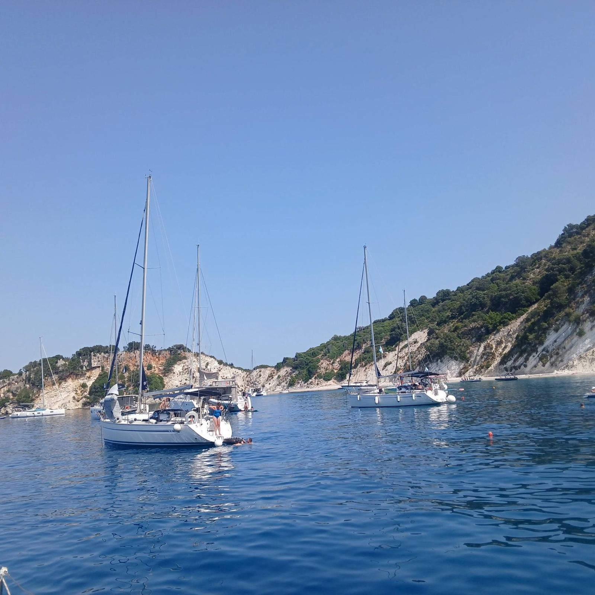

Monohull
Monohull
3 Cabins · 2011
Bavaria 40 Cruiser
7 guests7 berths2 heads
View yacht
From the deep blues of the Aegean to the emerald bays of the Ionian — hidden coves, timeless island life, and sunsets that feel almost unreal.
About AIyachts
AIyachts brings together the spirit of the Aegean and Ionian seas with a modern, guest-centred approach to sailing. We operate across Greece — from Athens and Lefkas to Corfu and Paros — offering seamless chartering, brokerage and yacht-management services supported by a network of trusted local partners.
What sets us apart is the blend of decades of hands-on maritime experience with academic expertise in tourism and customer experience — a company culture that is professional, warm, and deeply committed to the craft of sailing.
“Our mission is simple: to make every connection — guest, partner, or owner — feel valued, supported, and inspired by our love for the sea.”
AIyachts, founding principleTwo Bases, Two Characters
Two very different sailing grounds, ninety minutes apart by road. Switch the map to explore where we sail — then open the sea that suits your crew.
Destination · Ionian Sea
Calm waters, gentle afternoon winds and short, easy distances — ideal for first-time sailors and families. Emerald bays, sheltered anchorages and the quiet charm of Meganisi, Kalamos and Paxos.
Sail the IonianDestination · Aegean Sea
Bright white villages, dramatic coastlines and stronger winds for confident sailors. From the Saronic Gulf to the iconic Cyclades — a route through Greece's most recognisable imagery.
Sail the AegeanBareboat & Skippered Charters
From nimble two-cabin cruisers to spacious catamarans — every yacht is maintained to a standard worth trusting with your holiday.

Our own boats, in our own waters
Monohull
3 Cabins · 2011
 Monohull
Monohull
4 Cabins · 2014
 Monohull
Monohull
5 Cabins · 2010
 Monohull
Monohull
5 Cabins · 2018
 Catamaran
Catamaran
Catamaran · 2022
 Catamaran
Catamaran
Catamaran · 2019
Gallery of Experiences
Unfiltered moments from real charters — the coves, the crew, and the guests who came back for more.
Guest Services
For private charter guests — every detail curated so your time on board feels effortless and personal.
Reservations, local insight and seamless logistics — curated so your sailing experience feels effortless and personal.
Fresh, thoughtful provisions inspired by local flavours, tailored to your preferences before you step aboard.
Trusted skippers and hostesses bringing skill and hospitality — elevating your charter into something memorable.
Brokerage & Management
B2C · Private buyers & sellers
A curated selection of well-maintained sailing and motor yachts, handpicked through trusted owner relationships.
B2B · Charter companies & owners
Year-round support for owners — from berthing and on-season operations to winterisation and deliveries.
Ready when you are
Send us your dates and the size of your crew. We will come back with the yachts that fit, the route we would sail, and an honest price.